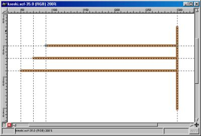

Œcie¿ki
Œcie¿ki umo¿liwiaj¹ do³¹czenie do obrazów elementów wektorowych.
Ka¿da œcie¿ka zdefiniowana w GIMPie jest osobnym obiektem, przy czym rysunek
mo¿e zawieraæ dowoln¹ liczbê œcie¿ek.
Modyfikacja obrazu (np. rysowanie pêdzlem) nie wp³ywa w ¿aden sposób na œcie¿ki.
Podobnie, modyfikacja œcie¿ek (np. dodawanie wêz³ów)
nie wp³ywa na zawartoœæ rysunku.
Cech¹, która wyró¿nia œcie¿ki jest to, ¿e w ³atwy sposób mo¿emy modyfikowaæ ich kszta³t.
Sk³adaj¹ siê one z po³¹czonych wêz³ów, które mo¿emy dowolnie dodawaæ, usuwaæ oraz przesuwaæ.
W ka¿dym wêŸle przechowywane s¹ informacje o kszta³cie krzywej.
Przesuwaj¹c wskaŸniki kszta³tu wyginamy fragmenty œcie¿ki nadaj¹c
jej ¿¹dany wygl¹d.
Operacje wykonywane na œcie¿kach
Dodawanie/usuwanie œcie¿ek
Operacje wykonywane na ca³ych œcie¿kach to dodanie œcie¿ki do
obrazu, zduplikowanie istniej¹cej œcie¿ki oraz usuniêcie œcie¿ki.
Istnieje tak¿e operacja przekszta³caj¹ca bie¿¹c¹ selekcjê w œcie¿kê.
Zatem nowo utworzona œcie¿ka mo¿e byæ œcie¿k¹ pust¹ (tj. nie posiadaj¹c¹ wêz³ów),
kopi¹ istniej¹cej œcie¿ki albo przybraæ kszta³t zaznaczenia.
Zmiana kszta³tu œcie¿ki
Po dodaniu nowej
lub wybraniu istniej¹cej œcie¿ki mo¿emy przyst¹piæ do jej edycji.
Edytuj¹c œcie¿kê mamy mo¿liwoœæ dodawania, usuwania oraz przesuwania wêz³ów.
Mo¿emy równie¿ zmieniaæ kszta³t krzywych ³¹cz¹cych kolejne wêz³y
oraz przesuwaæ ca³¹ œcie¿kê.
Modyfikowanie rysunku
Gdy ustalimy kszta³t œcie¿ki mo¿emy przyst¹piæ do edycji samego obrazu.
Operacja Rysuje œcie¿kê powoduje narysowanie na
rysunku kszta³tu bie¿¹cej œcie¿ki aktualnym pêdzlem.
Przycisk Tworzy zaznaczenie ze œcie¿ki wykonuje zaznaczenie
fragmentu rysunku o kszta³cie bie¿¹cej œcie¿ki. Oczywiœcie na zaznaczonym
obszarze mo¿emy wykonywaæ wszystkie operacje dostêpne dla selekcji (malowanie,
wype³nianie, przekszta³cenia itd.).
Zastosowania œcie¿ek
Jakie s¹ zalety stosowania œcie¿ek? Wykorzystuj¹c œcie¿ki
mo¿emy dodawaæ do rysunku elementy, które ³atwo
wielokrotnie narysowaæ lub pokolorowaæ zmieniaj¹c im ewentualnie kszta³t.
W ten sposób rysunek staje siê bardziej elastyczny i modyfikowalny.
Druga wa¿na zaleta polega na tym, ¿e œcie¿ki s¹ oddzielnymi obiektami wektorowymi.
Modyfikowanie œcie¿ki nie powoduje ¿adnych zmian w rysunku
(dok³adniej: nie zmienia kolorów poszczególnych pikseli).
Edycja kszta³tu nie niesie za sob¹ ryzyka "zniszczenia" rysunku
lub jego fragmentu. Dopiero, gdy uznamy, ¿e kszta³t œcie¿ki
jest zadowalaj¹cy przystêpujemy do rysowania pêdzlem, wype³niania kolorem
czy jakiejkolwiek innej operacji edytorskiej.
Wreszcie nie mniej wa¿ny jest fakt, ¿e œcie¿ki umo¿liwiaj¹
operowanie krzywymi Beziera.
Æwiczenia
Æwiczenie 1
Przygotuj rysunek przedstawiaj¹cy kszta³t m³otka.
Rys. 1. Okno dialogowe Œcie¿ki. Po utworzeniu nowego rysunku przechodzimy do okna dialogowego
zarz¹dzaj¹cego œcie¿kami. W tym celu wybieramy z menu kontekstowego
opcjê Warstwy | Warstwy, kana³y i œcie¿ki.
W oknie dialogowym wybieramy zak³adkê Œcie¿ki.
Nastêpnie
naciskaj¹c przycisk Tworzy now¹ œcie¿kê dodajemy do rysunku now¹ œcie¿kê.
W górnej czêœci okna dialogowego Œcie¿ki dostêpne s¹ cztery przyciski:
Nowy punkt, Dodaje punkt,
Usuwa punkt oraz Modyfikuje punkt.
Po wybraniu pierwszego z nich (Nowy punkt) klikamy kolejno w
wybrane miejsca rysunku. Ka¿de klikniêcie spowoduje dodanie
do œcie¿ki kolejnego punktu. Dodawanie punktów koñczymy klikaj¹c w pierwszy punkt.
Kolejne punkty œcie¿ki stawiajmy w takich miejscach, by otrzymana œcie¿ka
przypomina³a swym kszta³tem rysunek 2. Jeœli któryœ z punktów œcie¿ki
le¿y w z³ym miejscu to mo¿emy go przesun¹æ przytrzymuj¹c klawisz Ctrl.
Ca³¹ œcie¿kê przesuniemy przytrzymuj¹c klawisz Alt.
Oczywiœcie mo¿emy sobie pracê znacznie u³atwiæ pos³uguj¹c siê prowadnicami oraz
odpowiednio zwiêkszaj¹c podgl¹d rysunku.
Rys. 2. Œcie¿ka o kszta³cie m³otka. Po ustaleniu kszta³tu naciskamy przycisk Tworzy zaznaczenie ze œcie¿ki, który
przekszta³ci œcie¿kê w zaznaczenie.
W ten sposób otrzymaliœmy zaznaczenie o kszta³cie m³otka.
Teraz wykorzystuj¹c narzêdzie
Wype³nianie kolorem lub deseniem wype³niamy zaznaczenie kolorem czarnym.
Efekt naszej pracy zosta³ przedstawiony na rysunku 3.
Rys. 3. M³otek po przekszta³ceniu w zaznaczenie i wype³nieniu farb¹. Æwiczenie 2
Przygotuj rysunek przedstawiaj¹cy przecinek widoczny na rysunkach 5 oraz 6.
Po utworzeniu nowego rysunku przechodzimy do okna dialogowego œcie¿ek.
Tworzymy now¹ œcie¿kê i przystêpujemy do jej edycji. Po dodaniu piêciu wêz³ów
zmieniamy kszta³t krzywych ³¹cz¹cych wêz³y. Wykonanie operacji ci¹gnij-upuœæ
na wêŸle powoduje zmianê po³o¿enia punktów steruj¹cych kszta³tem krzywych.
Odcinki ³¹cz¹ce wêz³y przybieraj¹ kszta³t krzywych Beziera.
Kilkukrotnie powtarzamy tê operacje w kolejnych wêz³ach a¿ do uzyskania
œcie¿ki przypominaj¹cej przecinek widoczny na rysunku 4.
Pamiêtajmy, ¿e ka¿dy wêze³ mo¿emy przesun¹æ wykonuj¹c operacje ci¹gnij-upuœæ
z jednoczesnym przytrzymaniem klawisza Ctrl, natomiast naciœniêcie klawisza
Shift przed operacj¹ przeci¹gania wêz³a spowoduje zmianê
kszta³tu tylko jednego z ramion krzywej przechodz¹cej przez dany wêze³.
Rys. 4. Przecinek: œcie¿ka wykorzystuj¹ca krzywe Beziera. Gdy œcie¿ka jest gotowa przekszta³camy j¹ w zaznaczenie.
Zaznaczony obszar wype³niamy kolorem niebieskim.
Nastêpnie ustalamy kolor pióra na granatowy. Po ponownym przejœciu do okna
dialogowego œcie¿ek wykonujemy operacjê Rysuje œcie¿kê.
Przecinek zostanie obrysowany kolorem granatowym tak jak to
zosta³o przedstawione na rysunku 5.
Rys. 5. Przecinek po wype³nieniu kolorem i obrysowaniu œcie¿ki. Jeœli teraz uznamy, ¿e potrzebny nam jest przecinek o identycznym
kszta³cie a innych kolorach wówczas wystarczy ponownie otworzyæ plik
i wykonaæ operacje wype³niania kolorem i obrysowywania œcie¿ki.
Oczywiœcie w celu zapisania w pliku informacji o œcie¿kach musimy stosowaæ format XCF.
Zapisanie pliku w formacie JPEG, PNG czy BMP powoduje utracenie informacji o œcie¿kach!
Rys. 6. Przecinek po zmianie kolorów. Æwiczenie 3
Przygotuj rysunek przedstawiaj¹cy m³otek pokolorowany na dwa kolory
tak jak to przedstawiono na rysunku 7.
Rys. 7. M³otek pokolorowany na dwa kolory. Pracê rozpoczynamy ustalaj¹c prowadnice tak, by przebiega³y niemal
po ka¿dej prostej rysunku. Nastêpnie tworzymy œcie¿kê bêd¹c¹ obrysem m³otka.
Kwadrat otaczaj¹cy m³otek otrzymamy w dwóch krokach.
Najpierw zaznaczamy kwadrat otaczaj¹cy m³ot. Kwadrat ten wype³niamy czarn¹ farb¹.
Nastêpnie zaznaczony kwadrat pomniejszamy (operacja pomniejszania zaznaczenia) i
wype³niamy bia³¹ farb¹. Po dodaniu ramki rysujemy czarny m³otek (zaznaczenie
przekszta³camy w selekcjê; selekcjê wype³niamy kolorem).
Rysunek 8 przedstawia bie¿¹cy stan rysunku: m³otek otoczony czarn¹ obwódk¹.
Rys. 8. M³otek z obwódk¹. Korzystaj¹c z narzêdzia Zaznaczanie s¹siaduj¹cych obszarów zaznaczamy bia³y
obszar wewn¹trz czarnej obwódki. Po aktywacji narzêdzia Zaznaczanie s¹siaduj¹cych obszarów
nale¿y klikn¹æ w dowolny bia³y piksel wewn¹trz czarnej ramki.
Nastêpnie usuwamy lew¹ stronê zaznaczenia.
Wybieramy narzêdzie do selekcji prostok¹tnej i przytrzymuj¹c klawisz Ctrl odcinamy lew¹
po³owê zaznaczenia. Otrzymany obszar wype³niamy kolorem czarnym.
Rysunek 9 przedstawia uzyskane zaznaczenie po wype³nieniu kolorem.
Rys. 9. Kolejny etap pracy nad dwukolorowym m³otkiem. Nastêpnie usuwamy wszelkie zaznaczenia i uzyskujemy ze œcie¿ki zaznaczenie
w kszta³cie m³otka. Ponownie wykorzystuj¹c narzêdzie zaznaczenia prostok¹tnego oraz
klawisz Ctrl usuwamy lew¹ czêœæ zaznaczenia. Pozosta³e zaznaczenie wype³niamy kolorem bia³ym.
Otrzymany obraz zosta³ przedstawiony na rysunku 7.
Æwiczenie 4
Narysuj ramkê przedstawion¹ na rysunku 10.
Æwiczenie rozpoczynamy od wype³nienia ca³ego rysunku kolorem czarnym.
Nastêpnie dodajemy do rysunku now¹ œcie¿kê, po czym wykorzystuj¹c
prowadnice ustalamy jej kszta³t. W celu narysowania winietki
zmieniamy kolor pióra na bia³y, po czym naciskamy przycisk Rysuje œcie¿kê.
Æwiczenia 1, 2, 3 oraz 4 wykorzystywa³y jedn¹ œcie¿kê.
Ka¿dy rysunek wykonany GIMPem mo¿e zawieraæ dowoln¹ liczbê œcie¿ek,
o czym przekona nas kolejne æwiczenie.
Æwiczenie 5
Wykorzystuj¹c œcie¿ki narysuj odcinki przedstawione na rysunku 11 w
taki sposób, by mo¿na by³o w ³atwy sposób zmieniæ ich kolor.
 Rys. 11. Odcinki narysowane przy u¿yciu czterech œcie¿ek. Utwórzmy nowy obraz zawieraj¹cy prowadnice w podobnych miejscach jak na rysunku 11.
Korzystaj¹c z prowadnic dodajemy do rysunku cztery œcie¿ki. Ka¿da œcie¿ka odpowiada
jednemu br¹zowemu odcinkowi z rysunku 11 (jeden odcinek pionowy i trzy poziome).
Okno dialogowe z rysunku 12 pokazuje listê zdefiniowanych œcie¿ek.
Rys. 12. Cztery œcie¿ki u¿yte w æwiczeniu 5. Jeœli teraz chcemy zmieniæ kolor odcinków z br¹zowego na niebieski oraz nieco
zwiêkszyæ gruboœæ nale¿y kolejno:
- wyczyœciæ rysunek
- ustaliæ kolor i gruboœæ pióra
- wykonaæ operacje Maluje œcie¿kê czterokrotnie (dla ka¿dej œcie¿ki osobno)
Zmieniony rysunek jest widoczny na ilustracji 13.
Z racji na to, ¿e œcie¿ek nie mo¿emy ³¹czyæ ani grupowaæ,
operowanie zbyt du¿¹ ich liczb¹ jest wygodne.
Æwiczenie szóste wyjaœnia, w jaki sposób tworzyæ œcie¿ki
sk³adaj¹ce siê z kilku roz³¹cznych odcinków.
Rys. 13. Œcie¿ki z æwiczenia 5 po pomalowaniu innym pêdzlem. Æwiczenie 6
Przygotuj rysunek, który zawiera œcie¿kê sk³adaj¹c¹ siê z roz³¹cznych odcinków,
tak by pomalowanie wszystkich odcinków mo¿na by³o wykonaæ pojedynczym naciœniêciem
przycisku Maluje œcie¿kê. Wykonaj ilustracjê podobn¹ do rysunku 14.
Rys. 14. Œcie¿ka zawieraj¹ca kilka roz³¹cznych fragmentów. Po utworzeniu nowego rysunku i ustawieniu prowadnic tworzymy now¹ œcie¿kê.
Jeœli chcemy by œcie¿ka zawiera³a odcinek nale¿y klikn¹æ w punkt startowy odcinka,
nastêpnie klikn¹æ w punkt koñcowy, po czym ponownie klikn¹æ punkt startowy.
Jeœli teraz kilkaj¹c utworzymy nowy wêze³, wówczas bêdzie on
rozpoczyna³ drugi (roz³¹czny) fragment œcie¿ki. Postêpuj¹c wed³ug opisanej metody
dodajemy do œcie¿ki kolejne odcinki. Podobnie jak w poprzednim zadaniu
dodajemy trzy odcinki poziome i jeden pionowy.
Ró¿nica polega na tym, ¿e w poprzednim zadaniu ka¿dy odcinek stanowi³ odrêbn¹ œcie¿kê,
podczas gdy teraz mamy do czynienia z jedn¹ œcie¿k¹ zawieraj¹c¹ cztery roz³¹czne odcinki.
Pojedyncze naciœniêcie przycisku Maluje œcie¿kê spowoduje pomalowanie
wszystkich czterech odcinków.
W æwiczeniu 7 wykorzystamy operacjê tworzenia œcie¿ki na podstawie zaznaczenia.
Poznane w zesz³ym odcinku operacje na zaznaczeniach
u³atwiaj¹ definiowanie œcie¿ek sk³adaj¹cych siê z kó³, elips, kwadratów oraz prostok¹tów.
Æwiczenie 7
Narysuj obramowanie przedstawione na rysunku 15.
Rys. 15. Œcie¿ka uzyskana z zaznaczenia. Zauwa¿my, ¿e obramowanie to jest kwadratem z obciêtymi naro¿nikami.
Zaznaczenie o takim kszta³cie uzyskamy stosuj¹c operacjê ró¿nicy zaznaczeñ.
Utwórzmy nowy rysunek i dodajmy do niego prowadnice.
Nastêpnie tworzymy selekcje kwadratow¹. Po utworzeniu selekcji kwadratowej
wybieramy narzêdzie do eliptycznego zaznaczania obszarów. Naciskamy klawisz Ctrl,
po czym z jednego z naro¿ników kwadratu rozpoczynamy selekcjê eliptyczn¹.
Po rozpoczêciu zaznaczania selekcji eliptycznej zwalniamy klawisz Ctrl,
a nastêpnie naciskamy klawisze Ctrl oraz Shift. Rozci¹gamy ko³o do zadanych
rozmiarów i zwalniamy przycisk myszki. Powy¿sza procedura powinna spowodowaæ
obciêcie jednego z naro¿ników kwadratu. Nale¿y j¹ powtórzyæ
czterokrotnie (dla ka¿dego naro¿nika z osobna).
W momencie, gdy zaznaczenie jest ju¿ gotowe przechodzimy do okna Œcie¿ki.
Operacja Tworzy œcie¿kê z zaznaczenia spowoduje konwersje
bie¿¹cego zaznaczenia na œcie¿kê. Jeœli operacja ta jest nieczynna, wówczas nale¿y
do rysunku dodaæ jak¹kolwiek œcie¿kê.
Gdy œcie¿ka jest gotowa rysujemy j¹ niebieskim piórem.
Metody opisane w æwiczeniach od pierwszego do siódmego
znajduj¹ zastosowanie przy do³¹czaniu do tworzonych obrazów
odcinków, krzywych oraz ³amanych. Ramki, gwiazdki, strza³ki czy przyciski to
przyk³ady tylko niektórych elementów graficznych pojawiaj¹cych siê w serwisach WWW, które
mo¿emy w wygodny sposób tworzyæ za pomoc¹ œcie¿ek.
Poniewa¿ jednak œcie¿ki mo¿emy konwertowaæ na zaznaczenia,
zatem rysowane elementy nie musz¹ stanowiæ jednobarwnych linii.
Ostatnie dwa æwiczenia pokazuj¹, w jaki sposób wykorzystaæ
œcie¿ki do wycinania fragmentów zdjêæ.
Æwiczenie 8
Dysponuj¹c zdjêciem przedstawionym na rysunku 16 przygotuj
ilustracjê prezentuj¹c¹ jedynie d³oñ widoczn¹ na rysunku.
Rys. 16. Zdjêcie przedstawiaj¹ce ¿abê na d³oni. Celem æwiczenia jest uzyskanie obrazu przedstawionego na rysunku 17.
W jaki sposób osi¹gn¹æ zamierzony cel? Nale¿y wykorzystuj¹c œcie¿ki
uzyskaæ zaznaczenie zawieraj¹ce jedynie d³oñ.
Otwórzmy rysunek Ÿród³owy, a nastêpnie dodajmy do niego now¹ œcie¿kê.
Klikaj¹c w obraz dodajmy do œcie¿ki wêz³y tak, by otrzymany obszar mniej wiêcej zawiera³ d³oñ.
Nastêpnie przesuwaj¹c wêz³y oraz zmieniaj¹c kszta³t œcie¿ki
(operacja zwiêkszania podgl¹du mo¿e bardzo u³atwiæ zadanie) d¹¿ymy do tego, by
uzyskany obszar mo¿liwie dok³adnie przylega³ do d³oni. Oczywiœcie w razie potrzeby nale¿y
dodaæ lub usun¹æ ze œcie¿ki dodatkowe wêz³y.
Uzyskana œcie¿ka powinna przypominaæ œcie¿kê widoczn¹ na rysunku 18.
Rys. 17. D³oñ po wyciêciu. Rys. 18. Œcie¿ka s³u¿¹ca do wyciêcia d³oni z rysunku. Gdy œcie¿ka jest gotowa nale¿y j¹ zamieniæ w zaznaczenie.
Jeœli chcemy uzyskaæ g³adki brzeg wyciêtego elementu to mo¿emy zmiêkczyæ
zaznaczenie wykonuj¹c operacjê Zaznaczenie | Wyg³adŸ.
Teraz odwracamy zaznaczenie i wype³niamy je kolorem bia³ym.
Powinniœmy otrzymaæ obraz widoczny na rysunku 17.
Na zakoñczenie proponujê samodzielne wykonanie æwiczenia
przedstawionego na rysunkach 19 oraz 20.
Strona, jak¹ nale¿y wykonaæ jest zatytu³owana "Pierwszy Internetowy Podrêcznik £apania ¯ab"
i zawiera piêæ ilustracji. Ka¿da z ilustracji to æwiczenie w wycinaniu fragmentów
zdjêæ. Zdjêcia, którymi nale¿y siê pos³u¿yæ przedstawiaj¹ dzieci ³api¹ce ¿aby.
Naszym zadaniem jest uzyskanie obrazów przedstawiaj¹cych wy³¹cznie d³onie.
ród³owe pliki nazywaj¹ siê zaba1.jpg, zaba2.jpg, zaba3.jpg oraz
zaba4.jpg i s¹ umieszczone w folderze cw-9.
Dodawanie do rysunku ozdobnych napisów
wykorzystanych na stronie "Pierwszy Internetowy Podrêcznik £apania ¯ab"
bêdzie stanowi³o temat kolejnego odcinka poœwiêconego warstwom.
Rys. 19. Strona tytu³owa podrêcznika ³apania ¿ab. Rys. 20. Internetowy podrêcznik ³apania ¿ab. Podsumowanie
W trzecim odcinku spotkañ z GIMPem nauczyliœmy siê
korzystaæ ze œcie¿ek. Wszystkie poznane operacje przedstawia Tabela 1.
Operacje te nie s¹ dostêpne za poœrednictwem skrótów klawiszowych,
wykonujemy je korzystaj¹c z okna Œcie¿ki i dostêpnych w nim przycisków.
Poniewa¿ okno dialogowe Warstwy, kana³y i œcie¿ki jest wyœwietlane
dosyæ czêsto warto zdefiniowaæ w³asny skrót klawiszowy.
Co ciekawe, w GIMPie skróty klawiszowe definiujemy naciskaj¹c ¿¹dan¹ sekwencjê
klawiszy (np. Ctrl+L) w momencie, gdy menu kontekstowe jest rozwiniête i wybrana
opcja jest podœwietlona na niebiesko.
Warto zapamiêtaæ opisane wczeœniej
dzia³anie klawiszy Shift, Ctrl oraz Alt podczas przesuwania wêz³ów.
Klawisz Ctrl s³u¿y do przesuwania wêz³a, Alt powoduje przesuniêcie ca³ej œcie¿ki,
zaœ Shift umo¿liwia niesymetryczna zmianê kszta³tu œcie¿ki przy przejœciu przez dany wêze³.
Operacje na œcie¿kach mo¿emy rozpocz¹æ równie¿ za poœrednictwem okna g³ównego GIMPa.
Opcja Krzywe Beziera dodaje now¹ œcie¿kê i przechodzi do
trybu edycji œcie¿ki. Pamiêtajmy równie¿, ¿e operacje dostêpne dla œcie¿ek wymagaj¹,
by obraz zawiera³ przynajmniej jedn¹ œcie¿kê.
Jeœli chodzi o wady GIMPa w odniesieniu do œcie¿ek to przede wszystkim
nale¿y zwróciæ uwagê na lukê w dokumentacji. Opis programu nie zawiera wyczerpuj¹cych informacji
dotycz¹cych œcie¿ek. Ponadto w programie brakuje operacji ³¹czenia
oraz grupowania œcie¿ek jak równie¿ mo¿liwoœci zaznaczenia kilku œcie¿ek
w celu ich pomalowania. Nie mo¿na równie¿ wykonywaæ operacji cofnij w stosunku
do œcie¿ek ani wêz³ów.
| Funkcja | Opcja menu | Klawisz skrótu |
| Okno œcie¿ek |
Warstwy, kana³y œcie¿ki |
Ctrl+L |
| Tworzenie nowej œcie¿ki |
Okno "Œcie¿ki" |
- |
| Kopiowanie istniej¹cej œcie¿ki |
Okno "Œcie¿ki" |
- |
| Usuwanie œcie¿ki |
Okno "Œcie¿ki" |
- |
| Tworzenie zaznaczenia ze œcie¿ki |
Okno "Œcie¿ki" |
- |
| Tworzenie œcie¿ki z zaznaczenia |
Okno "Œcie¿ki" |
- |
| Rysowanie œcie¿ki |
Okno "Œcie¿ki" |
- |
| Nowy wêze³ |
Okno "Œcie¿ki" |
- |
| Dodawanie wêz³ów |
Okno "Œcie¿ki" |
- |
| Usuwanie wêz³ów |
Okno "Œcie¿ki" |
- |
| Zmiana w³aœciwoœci wêz³ów |
Okno "Œcie¿ki" |
- |
| Definiowanie i edycja nowej œcie¿ki |
Narzêdzia->Zaznaczenie->Zaznaczenie Beziera |
B |
Tabela 1. Poznane funkcje programu GIMP.
|